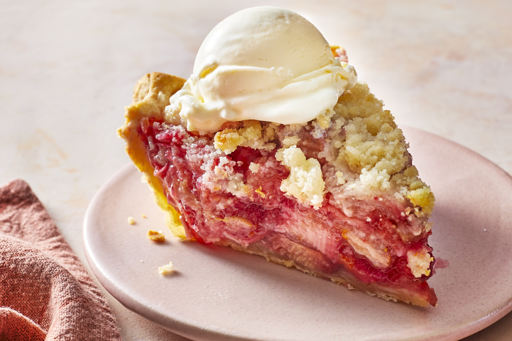

Strawberry Rhubarb Pie III

This pie recipe is perfect for a hot summer day. The sweet strawberries pair perfectly with the tart rhubarb for a delightful treat.
Ingredients
- 1 recipe pastry for a 9 inch double crust pie
- 1 tsp orange zest
- 4 cups diced rhubarb
- 3 cups sliced fresh strawberries
- 1 1/2 cups white sugar (optional)
- 6 tbsp quick-cooking tapioca
- 1 tbsp milk
- 1 tbsp white sugar for decoration (optional)
- 1 cup all-purpose flour (optional)
- 1 cup white sugar (optional)
- 1 tsp salt (optional)
- 1/2 cup butter (optional)
Directions
- Preheat oven to 400 degrees F (205 degrees C). Line a pie pan with bottom crust.
- Mix together rhubarb, strawberries, orange zest, 1 1/2 cups sugar, and tapioca. Spoon into crust. Roll out second crust, and place over the filling. Seal the edges. Brush with milk, and sprinkle extra sugar on top.
- Bake at 400 degrees F (205 degrees C) for 10 minutes. Reduce heat to 350 degrees F (175 degrees C), and bake for an additional 35 minutes.
- For a crumb topping, omit top pie crust. Combine flour, 1 cup sugar, and salt. Cut in butter or margarine until mixture is crumbly. Spoon over filling, and bake as directed above.
Links
Go to original recipe
Go back to main page